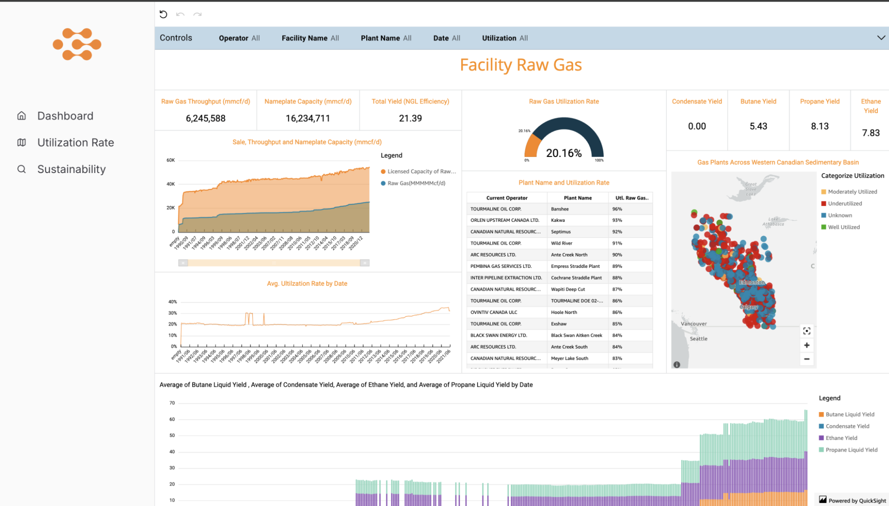

- Context
- HTC × Keyera × AWS case hackathon
- Type
- Analytics dashboards
- My role
- Front-end lead
- Tools
- AWS QuickSight, web app
- Date
- March 2025
The problem
Energy operators sit on enormous volumes of production and emissions data, most of it arriving as flat tables with no obvious shape. A plant manager asking "where are we losing capacity?" or "which facilities are our emissions outliers?" cannot answer either question by scrolling a spreadsheet. The data is not missing. It is unreadable.
What we built
I led the front end. We built three connected views, each answering one question rather than showing everything at once.
- Plant information. Every facility mapped across the basin, grouped by operational status, so coverage and inactivity are visible geographically.
- Utilization. Throughput against nameplate capacity, yield efficiency, and a ranked table of plants by utilization rate. The basin-wide figure came out at roughly 20%.
- Sustainability. Facilities where SF6 makes up an outsized share of total emissions, surfaced as a shortlist instead of a full registry.

The decision that mattered
Leading each view with a small number of headline figures and putting the detail below them. A dashboard that opens with twelve charts makes the viewer do the summarising, which is the work they came to avoid. Throughput, capacity, and yield sit at the top because they are the numbers someone repeats in a meeting; the ranked table and the map exist for the question that comes next.
A dashboard that shows everything has decided nothing. The design work was choosing what each screen refuses to show.
What I took from it
That the hardest part of analytics is editing. Every chart we cut made the remaining ones easier to read, and the version we presented was far smaller than the version we first built.